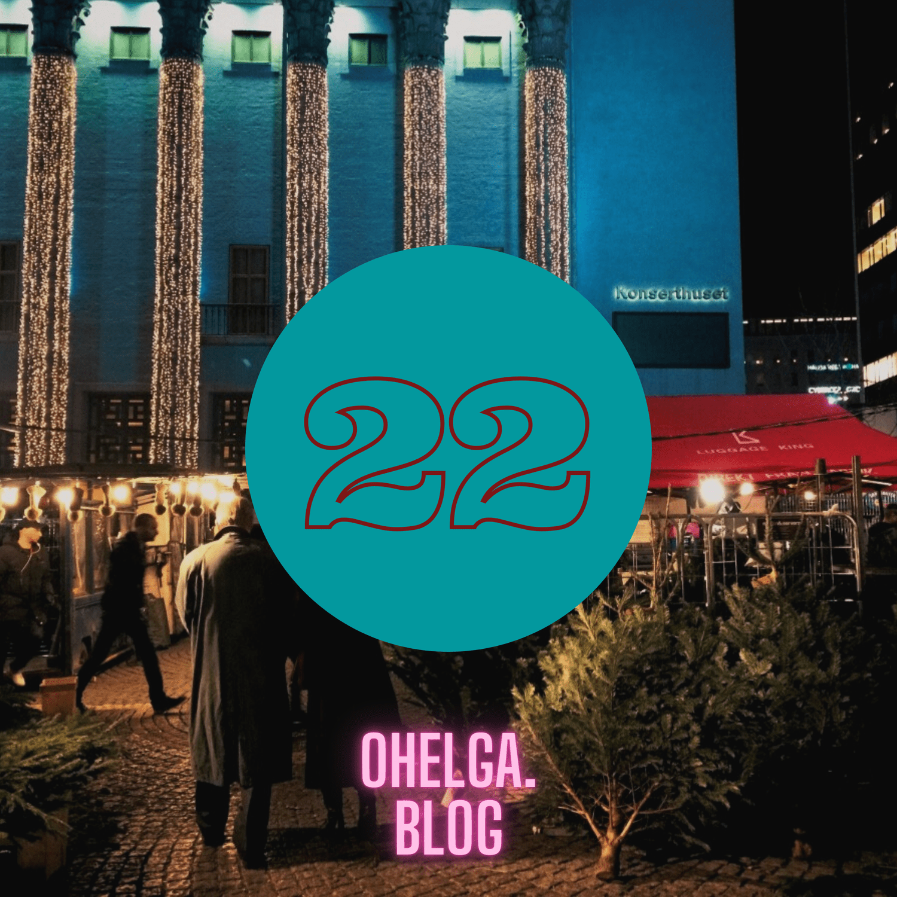

Tästä kaikki alkoi niinkuin oikeesti
Tästä versiosta voitte kiittää.. eiku, tästä podcastista voitte kiittää.. eiku.. Nå, hur som helst: en version med skyhög, subjektiv, nostalgifaktor.
Apple Music:
Loa Falkman - O Helga Natt (Adams julsång)
Spotify:
Loa Falkman - O Helga Natt (Adams julsång)

Kommentit / Kommentarer (1)
<p>Jo, nog kan de ju sin sak de där skolade operasångarna. En tekniskt felfri tolkning, igen, men också passionslös. Han var inte svettig efter att ha spelat in det här, om man säger så. Lite rutingig över det hela. Jag kan tänka mig att det var bättre live. Men flawless är alltid flawless, en 8. </p>